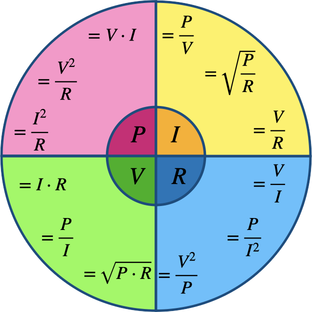

Preparation
- In order to prepare for the workshop, read this introduction on voltages and currents.
- To give a clear and neat overview of the concepts described in this introduction (and some more), we have provided the following table. Study this table and make sure you understand what is being stated in it.
| Name | Description | Unit | Symbol | Notes |
|---|---|---|---|---|
| Charge | The property of matter to experience a force when put in an (electro)magnetic field. | Coulomb | C | Charge can be positive or negative; elements of the same charge oppose each other, while elements of opposing charge are attracted. |
| Current | The amount of charge that flows through a conductor in a certain amount of time. | Ampère | I | One ampère is actually one coulomb per second. |
| Voltage | The difference in (electrical) potential between two points in a circuit. | Volt | V | The voltage at any point in a circuit is always relative to the voltage at some other point – usually the negative terminal of the power source. |
| Power | The rate at which electrical energy is transferred over a conductor. | Watt | P | A watt is actually one joule per second. |
| Resistivity | The ease (or lack thereof) with which conductors carry charge. | Ohm | Ω | An normal wire has a resistivity of almost zero. In general, Ohm's law applies: R=V/I. |
- Using Ohm's law, we can actually transform all of these units into each other. Using the table above, study this so-called Ohm's Law Wheel.

Exercises
Exersise 1: Getting to know the breadboard
During the planairy part, the wiring of the breadboard was explained. For easy reference, see the images below.
Connect the electromotor to the breadboard, as has been explained in the plenairy part. Make sure that you make use of jump wires to transfer the current from the long lines at the side to the smaller lines orthogonal to these. Add a small switch to the circuit, so that the electromotor only runs when the switch is pressed.
Change the wiring of the electromotor, so that what was previously on the negative pole of the current is now on the positive pole. Do you notice any difference in the rotation of the motor? Why do you think this is?
Exercise 2: Adding resistors
In order to control the amount of current over a conductor, we need to add resistors to the circuit. Lots of components don't work well when too much current is applied to it – making them too hot so that they eventually would burn out (as would be the case if you were to put an LED in the previous circuit).
Add a resistor after the switch in your circuit with the electromotor. Do you notice any difference between the workings, when you close the switch? You can determine the resistance of the resistor by looking at its colored bands. Check this site to see how to do that.
Now we know how to work with resistors, we can work with LEDs insteads of an electromotor – which is visually more attractive, less noisy and easier to do. Clear you breadboard completely and connect one LED with the current, using a resistor of about 150 ohm (the exact amount doesn't matter that much in this point, and is dependent on the voltage of the source). Remember that with LED's, the orientation matters: the longer pin of the LED should be connected with the positive pole of the source.
Now, use jump wire to connect multiple LEDs on the breadboard. In general, there are two ways in which you can connect the LEDs to each other: parallel of in series – have a look a the drawing below. Begin with a few LEDs in series (add one resistor 150 ohm). What happens when you remove one LED from the circuit? Can you explain why that is?
Now, make a new circuit but this time put the LEDs parallel. Make sure that you use individual resistors for each individual LED (if you're interested in why this is needed, check out this explanation by SimplyPut). Now what happens when you remove one of the LEDs of the circuit. Can you explain the difference?

Finally, add a variable restistor between your power supply and the LEDs. You can use a potentiometer for that, but (more interesing) some kind of sensor (several are provided in your kit). Experiment with different values of these sensors – do you notice what is happening?

Exercise 3: Capacitors
In this exercise, we are only showing the general workings of capacitors. In order to do this, we use manual switches to change the state of the capacitor from state 1 (charging) to state 2 (discharging). Later, we will show you how to use connected electronic switches in order to automate this process.
As has been explained, capacitors store small amounts of energy in their metal plates that are separated by an insulator. They are used to hold this energy until other parts of the circuit needs it. When you connect a capacitor to a battery, this battery keeps pushing electrons to the capacitor until they are fully saturated – the capacitor is said to be completely charged.
When a capacitor is fully charged, the voltage drop across its plates equals the battery voltage. When you remove the battery, current doesn't flow and charge remains in the capacitor. The capacitor looks like a power source on its own because it has electrical charge stored on its plates.
So now, we can for example use this energy to light up a LED, if only for a brief amount of time (the charge stored on a capacitor is usually not that large). In order to do this, we have to provide a path between both ends of the capacitor, allowing charge to flow over the LED.
Look at the schema below and make that on your breadboard. When you press switch S1, current flows through the capacitor, allowing it to charge. Then, when you release S1 and press S2, you provide a path between both ends of the capacitor, allowing current to flow and thereby lightning the LED.
Experiment with different values for the capacitor; how does that influence the behavior of the circuit? Also check what happens when you press both switches at the same time. Can you explain what is happening?
As you see, the wire from the LED is also connected to the ground. Would the circuit still work in the same manner if this connection was removed after the capacitor was charged?
Exercise 4: Transistors
The working of transistors has been explained in the planairy part. To recall, a simple drawing of the pins is provided below. In general, transistors can be used as either a switch or as an amplifier; however, in these exercises we are only going to use them as switches.
- VBC < 0.7V → switch off
- VBC > 0.7V AND IB small → switch partially on
- VBC > 0.7V AND IB = max → switch on
Have a look at the circuit below. What do you think will happen if you put current on either point A or point B? As you can see in the right picture, we have used push button to put current on the base of either transistor (also note that we have used the same colors for the same functionality – something that is good practice when you start to make more complex circuits). Re-create this circuit on your own breadboard and experiment with the push button.
As you have seen, the LED goes on when either of the push buttons is pressed. You have just created what is known as a OR-gate: the LED turns on when either A OR B is pressed. We can actually summarize the functionality of this small circuit by providing its so-called truth-table (1 means current is present, 0 means current is not present):
Given this OR-gate, can you come up with a circuit that realises an AND-gate: a gate that will output 1 only if both points A and point B are 1? And what about an XOR-gate?
Exercise 5: Timing an event
In this last exercise, we are going to put all the stuff together in order to make a timed event. Timing is an essential part in most computing processes, and the system we are creating here is used in lots of modern day systems (of course in integrated circuits and a bit more acccurate, but still).
Have a look at the circuit below. With the switch open, current flows from the positive source throught R2 to the base of the transistor, thereby allowing current to flow over R3 and the LED back to the ground.
When we close the switch, current flows over R1 to the capacitor in the middle, allowing it to charge itself. However, as you know a fully charged capacitor can be seen as an open switch, so the previous flow of the current (with the switch open) is restored.


Re-create this circuit on your own breadboard and see what happens when you close the switch. Can you explain in your own words why the circuit functions as it does? Why is it important that R2 ≫ R1? Experiment with different values for the capacitor; can you explain the differences in behavior?
Assignment: make a basic flip-flop
Have a look at this example and the explanation of a basis flip-flop circuit. Though in this case the circuit uses different NPN-transistors than we have, you can realise it with the same transistors that we have used for the gates.

Re-create this circuit on your own breadboard. Experiment with different values for the resistors and/or the capacitors. Make sure you understand why the circuit is doing what it is doing. Can you replace one (or both) of the resistors with a sensor...?
Document your process using both text and photographs and write a small piece of text of the workings of the circuit. Be sure to upload both the documentation and the explanation on your teams student folder before the next session. As you are working in pairs, upload the documents on both your student folders.